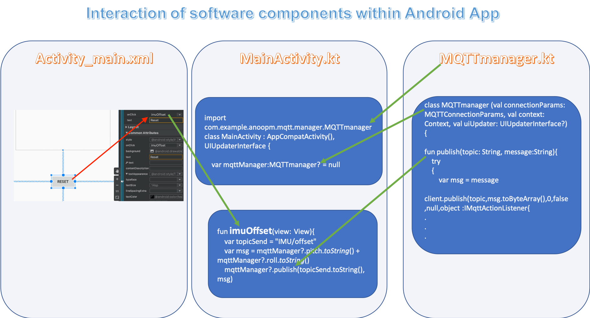
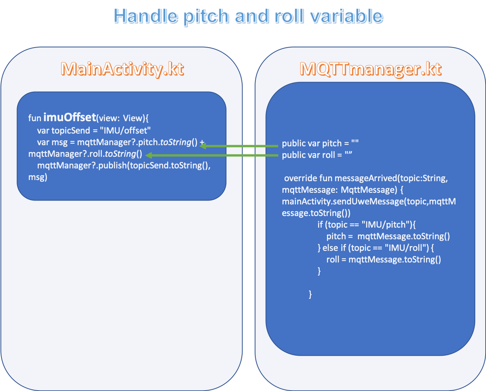

Using Kotlin seems to be an up to date approach, so lets try it out
Developing a android app with MIT App Inventor was a nice experience but it seems to be limited in what can be achieved. For me it was not possible to handle several mqtt messages in one topic which could have been solved by using several topics, but that was not a solution I liked. So lets dive into Android Studio. The well done documentation helps whenever we get stuck.
Installation is described at the developers webpages.
To create the first android app with Kotlin I followed the YouTube of Reso Coder
You can either use a
More on how apps can be run see https://www.homeandlearn.co.uk/android/running_android_apps.html
To use your phone as a test device you need to configure it to be used for USB debugging
On Android 4.2 and higher, you must enable this screen. To enable developer options, tap the Build Number option 7 times. You can find this option in one of the following locations, depending on your Android version:
More detail can be found at https://developer.android.com/studio/debug/dev-options
The Kotlin part of the app is shown below and can be cloned from GitHub https://github.com/ResoCoder/FirstKotlinAndroidApp
package com.example.firstapptut
import androidx.appcompat.app.AppCompatActivity
import android.os.Bundle
import android.widget.SeekBar
import kotlinx.android.synthetic.main.activity_main.*
class MainActivity : AppCompatActivity() {
override fun onCreate(savedInstanceState: Bundle?) {
super.onCreate(savedInstanceState)
setContentView(R.layout.activity_main)
val initialTextViewTranslationY = textView_progess.translationY
seekBar.setOnSeekBarChangeListener(object: SeekBar.OnSeekBarChangeListener{
override fun onProgressChanged(seekBar: SeekBar?, progress: Int, fromUser: Boolean) {
textView_progess.text = progress.toString()
val translationDistance = (initialTextViewTranslationY + progress * resources.getDimension(R.dimen.text_anim_step) * -1)
textView_progess.animate().translationY(translationDistance)
}
override fun onStartTrackingTouch(seekBar: SeekBar?) {
}
override fun onStopTrackingTouch(seekBar: SeekBar?) {
}
})
button_rest.setOnClickListener { v ->
seekBar.progress = 0
textView_progess.animate().setDuration(500).rotationBy(360f)
.translationY(initialTextViewTranslationY)
}
}
}
The video is on youtube https://www.youtube.com/watch?v=NpURY3zE8o8. The code is on GitHub and can be read into Android Studio via
My version is on https://github.com/uwesterr/KotlinMQTTSample/tree/master
input here GitHub Url https://github.com/anoop4real/KotlinMQTTSampleOn the pixel 2 that looks like
To handle mqtt the Class MqttAndroidClient from eclipse is used https://www.eclipse.org/paho/files/android-javadoc/org/eclipse/paho/android/service/MqttAndroidClient.html
Detailed article about mqtt communicaiton by heise Developer is given at https://www.heise.de/developer/artikel/Kommunikation-ueber-MQTT-3238975.html
The number sign (#) is a wildcard character that matches any number of levels within a topic. For example, if you subscribe to finance/stock/ibm/#, you receive messages on these topics:
for my case it is
Hint, all of the sudden app did not work anymore. after
- File => Sync project with gradle files
- File => Sync with file system
the APP worked es before
Notes on development aspects of MAUE.
The following graph shows how the software components interact.

Pitch an roll are reported via mqttt from the raspi to the phone. The values are needed for

The offset values take into consideration that the sensor might not be perfectly horizontally installed. Rotation in yaw are not taken into consideration, so roll and pitch should be roughly aligned, the cross coupling is small for small yaw angels and should be negelectable for our purpose.
Note, store measured values as offset when reset button is pressed, not measured minus offset
We want to create a visual representation of mqttt messages
First add the Button element in activity_main.xml
and then connect buttion click event with function To make click event work add android:onClick attribute to Declared Attributes to the Button element in your XML layout. The value for this attribute must be the name of the method you want to call in response to a click event. The Activity hosting the layout must then implement the corresponding method.
https://android.jlelse.eu/about-the-mqtt-protocol-for-iot-on-android-efb4973577b
mqtt JSON python
#!/usr/bin/python
import json
import paho.mqtt.client as mqtt
send_msg = {
'data_to_send': variable1,
'also_send_this': variable2
}
client.publish("topic", payload=json.dumps(send_msg), qos=2, retain=False)https://www.programcreek.com/java-api-examples/?api=org.eclipse.paho.client.mqttv3.MqttMessage
@Override
public void messageArrived(String topic, MqttMessage message) throws Exception {
String payload = new String(message.getPayload());
System.out.println("Red'c command: " + payload);
JsonObject jsonObject = parser.parse(payload).getAsJsonObject();
String cmd = extractCommandData(jsonObject, CMD_KEY);
switch (cmd) {
case "ping":
sendResponse(pingResponse(jsonObject));
break;
case "randnum":
sendResponse(randResponse(jsonObject));
break;
default:
sendResponse(payload);
}
msgRecd = true;
}
At https://github.com/android/app-bundle-samples/tree/master/InstantApps you find a collection of sample code which can be run from within Android Studio
Select the
instantfeature module run configuration
Run the selected configuration
For attribution, please cite this work as
Sterr (2020, March 17). Uwe's Blog: Create Android App with Android Studio and Kotlin. Retrieved from http://uwesterr.de/posts/2020-03-17-create-android-app-with-android-studio-and-kotlin/
BibTeX citation
@misc{sterr2020create,
author = {Sterr, Uwe},
title = {Uwe's Blog: Create Android App with Android Studio and Kotlin},
url = {http://uwesterr.de/posts/2020-03-17-create-android-app-with-android-studio-and-kotlin/},
year = {2020}
}